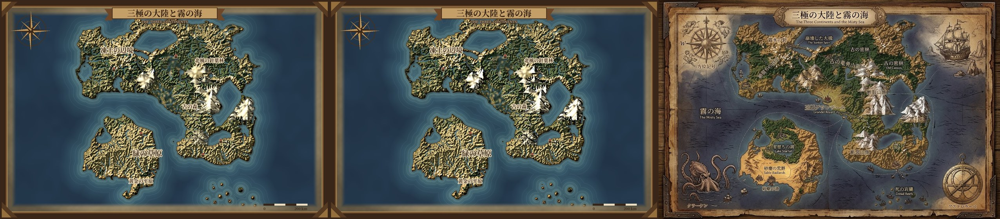
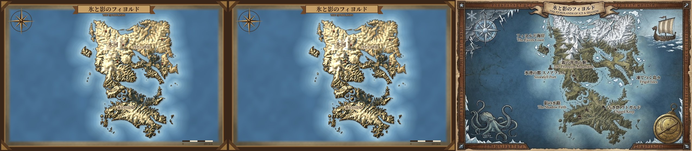

雪と砂を、周りに溶かさない試作(プログラム)
概要: ユーザーの指摘「砂も雪も周りに溶けすぎ」を受けて直しました。原因は私の前の直し方で、山の浮きを消すために、色を地面に寄せ、ふもとをぼかし、明暗を弱めすぎたことです。そこで、ふもとのぼかしを狭め、山の明暗の差を戻し、山の輪郭に暗い線を足し、雪を白く明るくしました。山の峰は分かれて見えるようになりましたが、世界6の雪はまだ白い塊のままで、地面の黄土色も直っていません。
拡大(左=前回 / 右=今回)
 絵番号 E054
絵番号 E054世界7(砂漠)。峰の輪郭が暗い線で分かれ、砂丘の明暗も強まった。
 絵番号 E055
絵番号 E055世界6(フィヨルド)。雪は白くなったが、氷河の周りは塊のまま。
 絵番号 E056
絵番号 E056世界5(大陸3つ)。
全体(左=前回 / 中=今回 / 右=Gemini)

絵番号 E057
絵番号 E058 絵番号 E059
絵番号 E059変えた点
- ふもとのぼかしの幅を約半分にした(なじませるのはふもとだけ)。
- 山の明暗の差を約1.5倍にし、暗さの下限も下げた。
- 山の外側に暗い輪郭の帯を足した。
- 雪の判定を緩め、白を明るくし、影をつけた。
目で見た評価(私の印象。判断はユーザーに)
- 良くなった点: 世界7は、峰が暗い輪郭で分かれ、砂丘の明暗がはっきりした。
- まだ違う点: 世界6は、雪が白くなっただけで、氷河の周りは塊のまま。Geminiは雪を北の山岳にまとめ、地面はオリーブ色〜灰褐色。こちらは地面全体が黄土色のまま。世界5は変化が小さい。
- 世界6の「白すぎ」という私の前の評価は誤りで、氷の世界の山は白くてよい(ユーザー指摘)。
限界・未確認
- 3枚の目視のみ。数字での評価はしていない。
- 強さの数値(1.7倍・下限0.40・ぼかし幅など)は、私が試して決めた値。
- 寒い世界での暖色の抑え方は未実施。
コード: gstyle5_gen.py(山の色・輪郭・雪)。